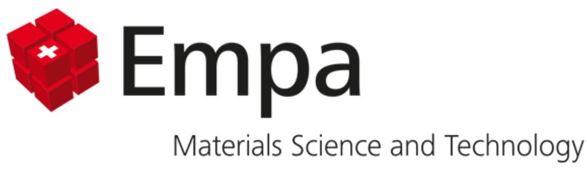
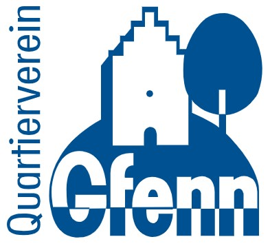

<meta charset="UTF-8"><meta name="viewport" content="width=device-width, initial-scale=1.0">
<title>Colouring Dübendorf</title>
<style type="text/css">body {
font-family: Arial, sans-serif;
line-height: 1.6;
margin: 0;
padding: 0;
background-color: #f5f7fa;
color: #333;
}
header {
background-color: #2c7a7b;
color: #fff;
padding: 2rem 1rem;
text-align: center;
}
header h1 {
margin: 0;
font-size: 2rem;
}
main {
max-width: 900px;
margin: 2rem auto;
padding: 1.5rem;
background: #fff;
border-radius: 8px;
box-shadow: 0 4px 10px rgba(0,0,0,0.1);
}
h2 {
color: #2c7a7b;
margin-top: 1.5rem;
}
ul, ol {
margin: 0.5rem 0 1.5rem 1.2rem;
}
.highlight {
background: #e6fffa;
border-left: 4px solid #2c7a7b;
padding: 1rem;
margin: 1.5rem 0;
border-radius: 4px;
}
.team {
background: #f0f4f8;
padding: 1.5rem;
margin-top: 2rem;
border-radius: 8px;
}
.team h2 {
margin-top: 0;
}
footer {
text-align: center;
font-size: 0.9rem;
color: #666;
padding: 1rem;
}
</style>


<main>
<p>Herzlich willkommen auf der Plattform des Projekts <b>Colouring Dübendorf</b>. Die Energiewende gelingt nur gemeinsam. Auf dieser Plattform erhalten Sie Einblick in die aktuellen Energie- und Gebäudedaten des Quartiers Gfenn – und die Möglichkeit, Ihr Wissen und Ihre Erfahrungen einzubringen.</p>

<h2>Ziele und Inhalte des Projekts</h2>
<ul>
<li><strong>Daten sichtbar machen</strong> – Unter <em>Ihre Gebäude heute</em> finden Sie die öffentlich verfügbaren Informationen zu Ihrem Gebäude, einschließlich Gebäudetyp, Baujahr, Heizsystem und installierter PV-Leistung.</li>
<li><strong>Erfahrungen sammeln</strong> – Unter <a href="https://colouring-duebendorf.github.io/survey.html" target="_blank">Teilen Sie Ihre Angaben</a> können Sie die Daten prüfen, korrigieren und ergänzen. Sie können auch weitere Informationen zu Ihrem Gebäude angeben und Ihre Präferenzen und Pläne für künftige energetische Projekte angeben, z. B. geplante Sanierungen oder den Einsatz erneuerbarer Technologien.</li>
<li><strong>Beteiligung im Quartier</strong> – Unter <em>Stimmen aus dem Quartier</em> kann man einen Überblick über die Beteiligung der Gemeinschaft erhalten und sehen, welche Beiträge von den Bewohnerinnen und Bewohnern eingegangen sind.</li>
<li><strong>Zukunft gestalten</strong> – In <em>Zukünftige Szenarien & Ergebnisse</em> zeigen wir, wie sich das Quartier mit mehr erneuerbarer Energie, Sanierungen oder neuen Technologien entwickeln könnte.</li>
</ul>
  
<h2>Warum ist Ihre Teilnahme wichtig?</h2>
<p>Obwohl bereits viele Daten zu Gebäuden und Energieverbrauch vorliegen, sind diese nicht immer vollständig oder aktuell. Nur Sie als Eigentümerin, Eigentümer oder Anwohnerin, Anwohner wissen, wie es wirklich aussieht: Welche Heizung in Ihrem Gebäude läuft, ob eine Photovoltaikanlage vorhanden ist oder welche Sanierungen bereits stattgefunden haben. Ihre Angaben helfen uns, die Daten zu verbessern und ein realistisches Bild des Quartiers zu zeichnen.</p>


<h2>Was haben Sie davon?</h2>
<ul>
<li>Sie tragen dazu bei, dass die Energieplanung im Gfenn auf einer soliden Grundlage erfolgt.</li>
<li>Sie gestalten aktiv mit, wie Ihr Quartier in Zukunft aussehen könnte.</li>
<li><strong>Verlosung:</strong> Unter allen Teilnehmenden werden 3 Gutscheine für Energieberatung der Glattwerk AG im Wert von je 2'000 CHF verlost (siehe <a href="https://colouring-duebendorf.github.io/Teilnahmebedingungen_Wettbewerb.pdf" target="_blank">Teilnahmebedingungen</a>).</li>
</ul>


<h2>Datenschutz</h2>
<p>Ihre Angaben werden vertraulich behandelt und ausschliesslich für die Energieplanung im Quartier Gfenn verwendet. Die Teilnahme ist freiwillig. Es werden keine Namen erfasst, nur die Adresse zur räumlichen Einordnung.<br>
Am Ende der Umfrage können Sie optional Ihre E-Mail-Adresse angeben, um an der Verlosung eines Gutscheins vom Glattwerk teilzunehmen und Erinnerungen zu Plattform-Updates zu erhalten. Die E-Mail-Adresse wird getrennt von Ihren Umfrageantworten gespeichert und nicht mit diesen verknüpft.<br>
Ihre Daten werden anonym bzw. pseudonymisiert verarbeitet und nicht an Dritte weitergegeben.<br></p>


<div class="highlight">👉 <b>Ihre Teilnahme macht den Unterschied!</b><br>
Füllen Sie <a href="https://colouring-duebendorf.github.io/survey.html" target="_blank">die Umfrage</a> aus und helfen Sie mit, Ihr Quartier klimaneutral und zukunftsfähig zu gestalten.<br>
Sie können an der Verlosung von 3 Gutscheinen für Energieberatungsdienstleistungen der Glattwerk AG teilnehmen.</div>


<div class="team">
<h2>Projektteam & Kontakt</h2>
<p>Dieses Projekt wird betreut von:</p>
<ul>
  <li><a href="https://www.empa.ch/web/s313" target="_blank" rel="noopener noreferrer"><b>Urban Energy Systems Lab, Empa</b></a></li>
  <li><a href="https://www.duebendorf.ch/" target="_blank" rel="noopener noreferrer"><b>Stadt Dübendorf</b></a></li>
  <li><a href="https://www.gfenn.ch/" target="_blank" rel="noopener noreferrer"><b>Quartierverein Gfenn</b></a></li>
</ul>

<p>Bei Fragen wenden Sie sich gerne an:<br>
<ul>
  <li><a href="https://www.duebendorf.ch/personenregister/400603" target="_blank"><b>Milena Krieger</b></a> (Projektleiterin, Stadt Dübendorf) – <a href="mailto:milena.krieger@duebendorf.ch">milena.krieger@duebendorf.ch</a> – 044 801 6027<br>
  <li><a href="https://www.empa.ch/web/mag" target="_blank"><b>Georgios Mavromatidis</b></a> (Leiter des Labors für Urbane Energiesysteme, Empa) – <a href="mailto:georgios.mavromatidis@empa.ch">georgios.mavromatidis@empa.ch</a> – 058 765 4299<br>
  <li><a href="https://www.empa.ch/web/kobi" target="_blank"><b>Binod Koirala</b></a> (Gruppenleiter Gebäude and Städte, Empa) – <a href="mailto:binod.koirala@empa.ch">binod.koirala@empa.ch</a> – 058 765 4683</p>
</ul>

<p>Wir danken allen Beteiligten für die Zusammenarbeit und Ihr Engagement!</p>
</div>

<!-- Image Row -->
<div class="image-row" style="text-align: center;">
  
  
  
</div>

</main>

<footer>
<p>© 2025 Colouring Dübendorf – Alle Rechte vorbehalten.</p>
</footer>
